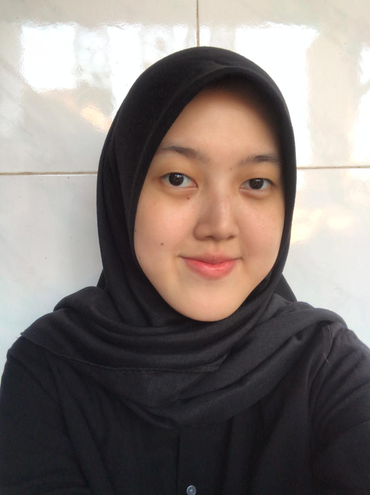

GAITSA ZAHIRA SHAFA
S1 SISTEM INFORMASI
Saat ini saya sedang menempuh pendidikan di Perguruan Tinggi Swasta di Bandung yaitu, Telkom University. Saya mengambil jurusan S1 Sistem Informasi dan saat ini saya berada di semester 5. Saya memiliki pengalaman mengerjakan Project-Based Internship secara online di Perusahaan FundEx melalui website Rakamin. Saya adalah seorang yang disiplin, bisa menajemen waktu dengan baik, teamwork dan dapat diandalkan. Pada saat SMA saya sering mengikuti beberapa perlombaan Tari Ratoeh Jaroe (Tari Saman) dan mendapatkan beberapa penghargaan.
| SD Negeri 09 Pagi, Jakarta Timur | 2009-2015 |
| SMP Islam Darussalam | 2015-2018 |
| SMA Negeri 4, Kota Bekasi | 2018-2021 |
| Telkom University | 2021-Sekarang |